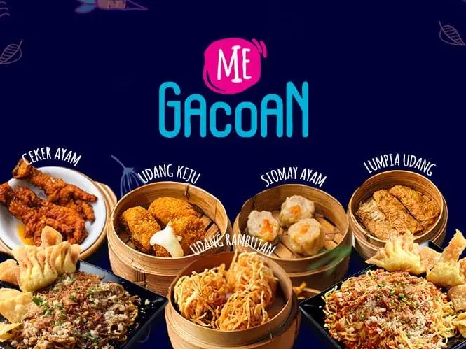

Makanan adalah bahasa universal yang menghubungkan seluruh manusia, dan Gacoan merupakan tempat di mana cita rasa dari berbagai penjuru Nusantara berkumpul dalam harmoni yang menggugah selera. mari kita telusuri pengalaman makan di Gacoan dengan segala keberagaman dan kelezatannya. Gacoan bukan sekadar restoran atau warung makan biasa. Ia adalah perpaduan antara tradisi kuliner Indonesia dengan nuansa modern yang menarik, menciptakan suasana yang memikat sejak langkah pertama masuk. Ketika memasuki Gacoan, aroma harum rempah-rempah khas Indonesia segera menyambut dengan hangat. Di dalamnya, terhamparlah suasana yang mengundang untuk menjelajahi berbagai rasa dari ujung barat hingga timur Indonesia. Pertama-tama, coba bayangkan sajian tahu campur khas Jawa. Tahu lembut yang digoreng dengan sempurna, disajikan dengan kuah kental beraroma bumbu kacang dan rempah-rempah yang menggugah selera. Setiap suapan menghadirkan kelezatan yang begitu autentik, seolah-olah tahu itu dibuat langsung di dapur nenek moyang kita sendiri. Tidak jauh dari sana, aroma nasi padang yang menggoda mencuat dari meja tetangga. Rendang yang lembut, gulai ayam yang kaya rasa, dan aneka sambal yang pedas menggoda selera menambah kekayaan rasa dalam pengalaman kuliner di Gacoan. Memilih lauk dari piringan-piringan yang terpajang seperti pemandangan seni kuliner, setiap hidangan adalah penjelajahan baru ke dalam kekayaan rasa Indonesia. Namun, tidak hanya masakan berat yang menggoda di Gacoan. Jajanan pasar tradisional juga mendapat tempat di sini dengan berbagai kudapan manis seperti klepon, lupis, dan onde-onde yang dibuat dengan resep turun temurun. Rasanya yang otentik dan tekstur yang kenyal mengingatkan pada masa kecil di kampung halaman, membuat kunjungan ke Gacoan bukan hanya soal makanan, tetapi juga perjalanan nostalgia yang menyenangkan. Tidak mengherankan, minuman segar khas Indonesia seperti es cendol dan es dawet menjadi penutup yang sempurna setelah menjelajahi kelezatan makanan di Gacoan. Es serut dengan sirup gula merah dan santan yang menyegarkan memberikan kesejukan yang cocok untuk menyelesaikan perjalanan kuliner yang memuaskan. Tak hanya tentang makanan, Gacoan juga menawarkan pengalaman budaya yang mendalam. Musik tradisional Indonesia mengalun lembut di latar belakang, menciptakan suasana yang cocok untuk menikmati hidangan dengan tenang. Seni dekorasi yang menggambarkan keindahan alam Indonesia, dari pantai-pantai eksotis hingga hutan-hutan tropis, menambah daya tarik visual yang memikat. Tentu saja, pengalaman makan di Gacoan tidak hanya tentang rasa dan suasana. Pelayanan yang ramah dan profesional dari para karyawan yang berpengetahuan luas tentang setiap hidangan yang disajikan membuat kunjungan ini menjadi lebih istimewa. Mereka dengan senang hati menjelaskan asal-usul masakan, bahan-bahan yang digunakan, dan cara penyajiannya yang khas. Dengan berbagai kelebihannya, Gacoan bukan hanya menjadi tempat untuk makan, tetapi juga destinasi untuk merayakan kekayaan kuliner Indonesia. Setiap hidangan di sini adalah cerminan dari warisan budaya yang begitu kaya dan kompleks, serta bukti betapa makanan bisa menjadi jembatan yang menghubungkan berbagai tradisi dan generasi. Saat akhirnya meninggalkan Gacoan, perut kenyang dan hati bahagia, pengalaman ini tetap hidup dalam ingatan. Makanan yang lezat, suasana yang memikat, dan budaya yang disajikan dengan begitu apik membuat Gacoan menjadi destinasi yang wajib dikunjungi bagi siapa pun yang mencintai keindahan Indonesia dalam segala bentuknya, terutama melalui pengalaman kuliner yang tak terlupakan.
 send email.